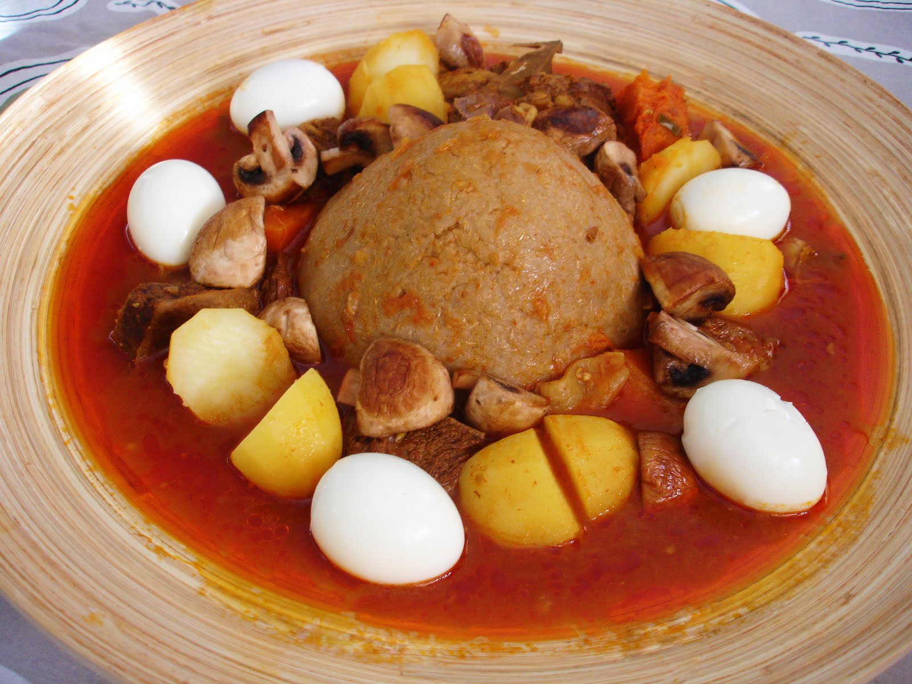

Bazeen, an Amazigh dish most often made from barley, is one of the most distinctive North African dishes. It is a staple in Western Libya, and often served for lunch on Fridays. There are variations on the basic lamb bazeen, serving it with stews featuring camel meat, chicken, squid or broad beans. A favourite winter variation is Bazeen served with Hassa soup made with dried meat (gideed). The most well-known Bazeen is made of a mixture of 3 parts barley flour to 1 part wheat flour. The flour is cooked in salted water to make a hard dough, and then formed into a rounded, smooth dome, with the tomato sauce, potatoes, boiled eggs around it, the mushroom shown in the picture is my addition, not part of the original recipe. An untraditional alternative is to serve bazeen as dumplings in a stew.
For the Bazeen
for the dough